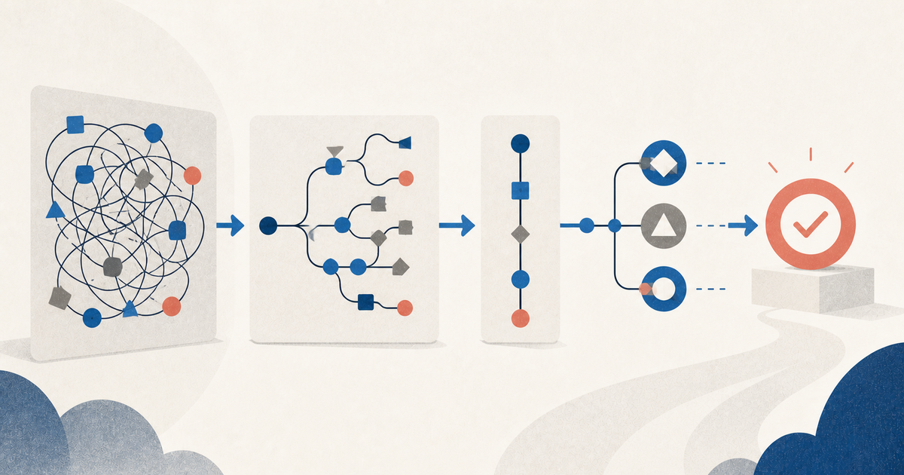

Use cases, user stories и BDD: три масштаба хорошего ТЗ для AI-агента
Как связать use cases, user stories и BDD в компактное и проверяемое ТЗ для агентской разработки.

Use case удерживает целостную цель. User story ограничивает порцию поставки. BDD-сценарий делает ожидаемое поведение проверяемым.
Я заметил, что AI-агент чаще выдаёт корректный результат, когда в ТЗ есть use cases. Это наблюдение согласуется с тем, как use case удерживает контекст цели и альтернативных путей.
Обычному разработчику недостающий контекст можно передать в разговоре. Он спросит, что делать с дублем, можно ли повторить операцию, кто увидит ошибку и считается ли частичный результат успехом. Coding agent тоже иногда задаёт вопросы, но чаще заполняет пробелы наиболее правдоподобными догадками. Код получается логичным — и не тем.
Use cases, user stories и BDD появились задолго до LLM. Каждый подход решал свою проблему разработки:
- use case не даёт потерять пользовательскую цель и альтернативные пути к ней;
- user story превращает потребность в небольшую обсуждаемую единицу поставки;
- BDD переводит правила в конкретные примеры, по которым можно однозначно проверить поведение.
Их часто считают тремя форматами одного и того же требования. Это ошибка. Они работают на разных масштабах и лучше всего дополняют друг друга.
зачем и для кого
↓
use case: целая цель и все существенные пути
↓
user stories: кандидаты на независимо поставляемые срезы
↓
BDD examples: точные наблюдаемые примеры
↓
автотесты и реализованный кодДля агентской разработки эта связка особенно полезна: она превращает подразумеваемую человеческую договорённость в компактную, трассируемую и проверяемую спецификацию.
Короткий ответ: в чём разница
| Артефакт | Главный вопрос | Охват | Основная ценность |
|---|---|---|---|
| Use case | Как актор достигает цели с помощью системы? | Цель целиком: успешный, альтернативные и неуспешные пути | Полнота поведения и граница системы |
| User story | Какую небольшую ценность поставим следующей? | Планируемый вертикальный срез | Приоритизация, переговоры и планирование |
| BDD scenario | Как система должна повести себя в конкретном примере? | Один пример одного правила | Однозначная проверка и исполняемая спецификация |
Самая полезная формула:
use case ≠ большая user story
user story ≠ короткий use case
BDD ≠ синтаксис Given / When / ThenUse case организует требования вокруг цели пользователя. User story организует работу вокруг поставляемого изменения. BDD организует совместное понимание вокруг конкретных примеров поведения.
1. Use case: цель и все пути к ней
Откуда взялась идея
Use cases ввёл в программную инженерию Ивар Якобсон. Позже Алистер Кокберн развил практику goal-oriented use cases в книге Writing Effective Use Cases.
Современная совместная формулировка Якобсона и Кокберна проста:
Use case — это все способы использования системы для достижения цели конкретного пользователя.
В этой фразе важны слова все способы. Один линейный happy path — это не весь use case, а только один его сценарий. Полноценный use case объединяет нормальный путь, допустимые варианты, отказы и восстановление. Ivar Jacobson & Alistair Cockburn, Use-Case Foundation
Четыре опоры use case
У хорошего use case есть:
- System of Interest — система, поведение которой мы описываем как чёрный ящик.
- Primary actor — роль, инициирующая взаимодействие ради цели.
- Goal — наблюдаемый полезный результат для актора.
- Flows — основной и альтернативные пути от триггера к успеху или осмысленному отказу.
Актор — не обязательно человек. Это роль с поведением на границе системы: клиент, оператор, планировщик, платёжный шлюз, внешняя информационная система. Один человек может играть несколько ролей, а одну роль — много людей.
Цель тоже не равна действию в интерфейсе. «Нажать кнопку “Импортировать”» — не цель. «Добавить операции из банковской выписки в учёт» — цель. Интерфейс можно заменить, а цель останется.
Use case — текст, а не овал на диаграмме
UML-диаграмма с человечками и овалами может показать границу системы и каталог целей. Она почти ничего не говорит о поведении внутри цели.
Ценность use case находится в тексте: кто чего хочет, что происходит на основном пути, где он разветвляется и что гарантирует система. Мартин Фаулер прямо отмечает, что UML стандартизировал диаграмму, но не самый ценный текст use case. Martin Fowler, Use Case
Поэтому для ТЗ агенту список овалов — только индекс. Рабочий материал начинается с потоков.
Goal levels: не провалиться в кнопки
Кокберн различает уровни целей. Практически достаточно трёх:
- summary — большая бизнес-активность из нескольких пользовательских целей: «Вести бухгалтерский учёт»;
- user goal — результат, который актор хочет получить за один осмысленный сеанс: «Импортировать банковскую выписку»;
- subfunction — шаг, нужный системе или верхнему use case: «Определить кодировку CSV».
Основной рабочий уровень — user goal, который Кокберн метафорически называет sea level. Если описание заполняется кликами, HTTP-запросами и внутренними функциями, надо несколько раз спросить «зачем?», пока не проявится пользовательская цель. Если use case занимает недели непрерывного бизнеса и включает десятки самостоятельных целей, надо спросить «как?», чтобы спуститься на уровень ниже.
Рабочий шаблон
Не каждый use case нужно оформлять полностью. Кокберн советует двигаться вширь: сначала акторы и цели, затем краткие описания, потом основные сценарии и лишь затем расширения. Читаемый черновик полезнее идеального шаблона, который никто не закончил. Alistair Cockburn, Writing Effective Use Cases: Reminders
Для сложной или рискованной функции подходит такой шаблон:
## UC-07. Импортировать банковскую выписку
Scope: Accounting System
Level: user goal
Primary actor: Бухгалтер
Supporting actors: Файловое хранилище
Trigger: Бухгалтер выбирает подготовленную банковскую выписку
Stakeholders and interests:
- Бухгалтер хочет быстро получить корректные операции без дублей.
- Владелец бизнеса хочет, чтобы итоговые суммы можно было проверить.
Preconditions:
- Бухгалтер авторизован и имеет доступ к организации.
- Организация и банковский счёт уже существуют.
Minimal guarantees:
- Некорректный импорт не изменяет существующие операции.
- Исходный файл и причина отказа доступны для аудита.
Success guarantees:
- Новые операции сохранены ровно один раз.
- Бухгалтер видит число добавленных, пропущенных и ошибочных строк.
Main success scenario:
1. Бухгалтер передаёт системе выписку для выбранного счёта.
2. Система распознаёт формат и показывает период, валюту и число операций.
3. Бухгалтер подтверждает импорт.
4. Система добавляет новые операции.
5. Система показывает итог импорта.
Extensions:
2a. Формат не поддерживается:
1. Система отклоняет файл и объясняет допустимые форматы.
2. Use case завершается без изменения операций.
2b. Валюта выписки не совпадает с валютой счёта:
1. Система предупреждает о несовпадении и не разрешает подтверждение.
3a. Бухгалтер отменяет импорт:
1. Система удаляет временные данные и ничего не записывает.
4a. Часть операций уже импортирована:
1. Система пропускает дубли.
2. Система продолжает импорт новых операций.
4b. Запись новых операций завершается ошибкой:
1. Система откатывает весь импорт.
2. Система сохраняет диагностический идентификатор ошибки.Это не обязательный ритуал. Поля нужны, только если они уменьшают неоднозначность. Для простого CRUD-действия достаточно brief. Для денег, прав доступа, идемпотентности и интеграций расширенный формат окупается быстро.
Как писать шаги
Классические эвристики Кокберна хорошо работают и для AI-агентов:
- один шаг выражает намерение или наблюдаемый результат, а не жест мышью;
- в каждом шаге ясно, кто действует: актор или система;
- система описывается как чёрный ящик;
- основной сценарий содержит только успешный путь;
- ответвления привязаны к конкретному шагу:
2a,4b; - расширение либо возвращается в основной путь, либо заканчивается успехом или отказом;
- данные называются доменными именами, а схема полей живёт в отдельном контракте.
Полезная проверка каждого шага: сохранится ли его смысл, если заменить web-интерфейс на CLI или API? Если нет, в use case, вероятно, просочилась реализация.
Сильная и слабая стороны
Use case силён там, где важна связность:
- длинный пользовательский путь;
- несколько внешних участников;
- транзакции и откаты;
- права доступа;
- ошибки, повторы и частичный успех;
- интеграции и асинхронные события.
Но use case обычно не предназначен быть единицей планирования спринта. Целая цель может быть слишком большой, а полезный релиз — содержать лишь несколько её потоков. Для нарезки поставки удобнее использовать user story.
2. User story: договорённость о следующей порции ценности
Story — не мини-спецификация
User stories пришли из Extreme Programming. Их классический смысл лучше всего передаёт формула Рона Джеффриса 3C:
- Card — короткая карточка-напоминание;
- Conversation — разговор, в котором команда выясняет детали;
- Confirmation — примеры или критерии, подтверждающие выполнение.
Карточка не заменяет требование. Она хранит достаточно информации, чтобы нужный разговор состоялся вовремя. Билл Уэйк подчёркивал эту конструкцию, когда предложил критерий INVEST для хороших stories. Bill Wake, INVEST in Good Stories, and SMART Tasks
Acceptance criteria — это договорённость о том, что считается готовым. BDD examples — конкретные примеры, которые помогают эту договорённость обнаружить, сформулировать и проверить.
Популярный шаблон:
As a <role>
I want <capability>
so that <benefit>помогает назвать роль, желаемую возможность и ценность. Но шаблон — не определение user story и не гарантия качества. Плохое требование легко уложить в три строки:
Как пользователь,
я хочу микросервис импорта на Kafka,
чтобы импортировать выписки.Здесь роль ничего не уточняет, ценность тавтологична, а решение заранее вшито в потребность.
Лучше:
US-07.1
Как бухгалтер,
я хочу предварительно проверить распознанную выписку,
чтобы не добавить операции не на тот счёт.INVEST: эвристика качества
Хорошая story стремится быть:
- Independent — поставляемой с минимальной зависимостью от соседних stories;
- Negotiable — оставляющей пространство для обсуждения решения;
- Valuable — дающей заметную ценность пользователю или бизнесу;
- Estimable — достаточно понятной для оценки;
- Small — помещающейся в короткую итерацию;
- Testable — допускающей ясное подтверждение результата.
INVEST — не приёмочный чек-лист. Это диагностическая эвристика. Например, если story невозможно оценить, проблема часто не в оценке, а в неизвестном правиле или скрытой зависимости.
User story режет use case не обязательно по шагам
Между use case и stories нет отношения один-к-одному. Фаулер формулирует различие так: use cases организуют требования в повествование о достижении цели, а stories — в куски для планирования. Одна story может реализовать:
- весь маленький use case;
- один или несколько его сценариев;
- несколько шагов;
- одно правило, проходящее через разные use cases;
- технически необходимую возможность, не видимую отдельным шагом в пользовательском повествовании.
Martin Fowler, Use Cases and Stories
Для примера с выпиской возможны такие срезы:
US-07.1 — распознать поддерживаемый CSV и показать preview
US-07.2 — подтвердить и атомарно импортировать новые операции
US-07.3 — обнаружить и пропустить ранее импортированные операции
US-07.4 — выдать понятный отчёт по ошибочным строкамЭто вертикальные срезы поведения. Story «сделать таблицу transactions» может быть задачей реализации, но сама по себе не поставляет пользовательскую ценность и не заменяет story.
Что меняется при работе с агентом
В классическом XP большая часть смысла находится в Conversation. У coding agent нет многолетнего общего контекста команды, а его сессия может закончиться. Поэтому карточку нельзя просто раздувать в исчерпывающий роман, но результат разговора надо материализовать:
- решения — в rules и contracts;
- конкретные примеры — в acceptance scenarios;
- неизвестное — в явные open questions;
- границы — в in scope / out of scope;
- связь с целой целью — идентификатором use case.
Иначе агент получает Card без Conversation и вынужден выдумать Confirmation.
3. BDD: от спорного правила к проверяемому примеру
BDD вырос из TDD, но не сводится к тестам
Дэн Норт описал BDD как попытку убрать путаницу вокруг TDD и говорить о поведении, а не о тестовых методах. Затем этот язык распространился с кода на анализ требований: разработчики, тестировщики и бизнес могли обсуждать систему одними доменными терминами. Dan North, Introducing BDD
Современная формулировка Cucumber разделяет ежедневную практику BDD на три стадии:
- Discovery — вместе исследовать изменение через правила, примеры и вопросы.
- Formulation — записать согласованные примеры точно и понятно человеку.
- Automation — связать примеры с исполняемыми проверками и реализовать поведение.
Cucumber, Behaviour-Driven Development
Это важная последовательность. В строгом понимании Cucumber написать .feature после готового кода — нормальный способ автоматизации тестов, но не полный BDD-процесс. Запустить Cucumber — тоже не значит провести discovery.
Rule → Examples → Questions
BDD начинается не с ключевого слова Given, а с обнаружения правил и пограничных случаев.
Для story о дублях разговор может выглядеть так:
Story:
Импортировать операции без повторного создания дублей.
Rule:
Операция, ранее импортированная из этого счёта, повторно не создаётся.
Examples:
- тот же файл загружен второй раз;
- другая выписка содержит одну ранее импортированную операцию;
- две операции имеют одинаковую сумму и дату, но разные банковские ID.
Questions:
- что является стабильным идентификатором у каждого поддерживаемого банка?
- считаем ли дублем операцию, исправленную банком задним числом?В технике Example Mapping story, rules, examples и questions специально разделяют. Много правил сигнализирует, что story велика; много вопросов — что она не готова; несколько разных примеров уточняют смысл правила. Matt Wynne, Introducing Example Mapping
Given / When / Then — грамматика одного примера
Согласованный пример удобно сформулировать так. Ниже показан полноценный минимальный фрагмент .feature:
Feature: Импорт банковской выписки
Scenario: Повторная загрузка того же файла
Given выписка с банковскими ID "A-100" и "A-101" уже импортирована
When бухгалтер повторно импортирует эту выписку
Then новые операции не создаются
And результат сообщает о 2 пропущенных дубляхСемантика частей:
- Given — существенное начальное состояние, контекст примера;
- When — одно событие или действие, поведение под проверкой;
- Then — наблюдаемый результат для пользователя или внешней системы.
And и But только делают текст естественнее. Они не создают новую фазу.
Официальная документация Gherkin советует проверять наблюдаемый выход, а не внутреннюю запись в базе. Она также рекомендует описывать поведение независимо от интерфейса: When Bob logs in, а не последовательность заполнения полей и кликов. Cucumber, Gherkin Reference и Writing better Gherkin
Конкретность важнее торжественности синтаксиса
Плохой сценарий (фрагмент, намеренно оставленный неточным):
Feature: Импорт банковской выписки
Scenario: Импорт работает правильно
Given у пользователя есть файл
When пользователь импортирует файл
Then файл должен успешно импортироватьсяОн выглядит формально, но не задаёт oracle: что именно означает «правильно» и «успешно»?
Хороший сценарий содержит значения, которые снимают неоднозначность:
Feature: Импорт банковской выписки
Scenario: Из смешанной выписки импортируются только новые операции
Given на счёте уже есть операция с банковским ID "A-100"
And выписка содержит операции "A-100", "A-101" и "A-102"
When бухгалтер подтверждает импорт
Then система создаёт 2 операции
And итог показывает "Добавлено: 2, дубли: 1, ошибки: 0"Конкретные примеры не заменяют общее правило. Один пример не доказывает, что мы поняли все случаи. Поэтому хороший пакет хранит оба уровня:
Rule: обобщение, которое должно быть истинно
Examples: несколько точек, уточняющих границы правилаBDD не требует Gherkin везде
Given / When / Then можно использовать в обычном Markdown, тестах или таблицах. Gherkin нужен, когда ценны единый парсер, отчёты и связка со step definitions.
Не стоит автоматизировать каждый текстовый сценарий через UI. Одни правила дешевле проверять на уровне доменной модели или API, другие — контрактными тестами, немногие критические пути — end-to-end. Исполняемая спецификация должна быть стабильной и быстрой, иначе она превращается в дорогую дублирующую тестовую обвязку.
4. Как три подхода складываются в одно ТЗ
Вернёмся к примеру.
Уровень 1. Use case удерживает целое
UC-07 Импортировать банковскую выписку показывает:
- границу Accounting System;
- цель бухгалтера;
- основной путь;
- отмену, неверный формат, валютный конфликт, дубли и откат;
- гарантии атомарности и аудита.
Агент видит не отдельный экран, а жизненный цикл операции.
Уровень 2. User story ограничивает изменение
US-07.3 Обнаружить и пропустить ранее импортированные операции выбирает один поставляемый срез. В ней явно указано:
Parent use case: UC-07
Covers: extension 4a
In scope: дубли с тем же банковским ID в пределах одного счёта
Out of scope: исправленные банком операции; поиск дублей без банковского IDАгент не обязан реализовывать все найденные в use case расширения за один проход.
Уровень 3. BDD уточняет правила
Feature: Импорт банковской выписки
Rule: Банковский ID уникален в пределах счёта, но не всей организации
Scenario: Тот же банковский ID на том же счёте
Given на счёте "KZ-01" есть операция с банковским ID "A-100"
When на счёт "KZ-01" импортируется операция с ID "A-100"
Then новая операция не создаётся
And операция учитывается как дубль
Scenario: Тот же банковский ID на другом счёте
Given на счёте "KZ-01" есть операция с банковским ID "A-100"
When на счёт "KZ-02" импортируется операция с ID "A-100"
Then новая операция создаётся
And операция не учитывается как дубльЗдесь проявилась деталь, которой не было в одной фразе «пропускать дубли»: область уникальности. Именно такие пробелы coding agent иначе заполняет случайным архитектурным решением.
Трассировка
Связь можно сделать машиночитаемой без тяжёлой бюрократии:
UC-07
├─ US-07.1 → AC-07.1.1, AC-07.1.2
├─ US-07.2 → AC-07.2.1, AC-07.2.2
└─ US-07.3 → RULE-DEDUP-1
├─ EX-DEDUP-1
└─ EX-DEDUP-2Идентификаторы позволяют агенту:
- показать, какое требование реализует тест;
- не потерять расширение при рефакторинге;
- отличить уже поставленное от будущего;
- назвать противоречие точнее, чем «ТЗ неясно».
Но трассировка не должна становиться отдельной ручной базой. Лучше хранить связи рядом с кодом и спецификацией и проверять их простыми скриптами.
5. Почему это особенно эффективно в агентской разработке
1. Use case задаёт глобальную связность
LLM хорошо продолжает локальный паттерн и хуже удерживает неявную систему обязательств. Если попросить «добавить импорт CSV», агент естественно построит happy path. Use case напоминает, что операция имеет триггер, предусловия, заинтересованных лиц, гарантии и последствия ошибок.
2. Story ограничивает автономию
Получив целый use case, агент может реализовать слишком много. Story задаёт budget изменения: какой вертикальный срез нужен сейчас и что намеренно остаётся за рамкой.
3. Примеры создают проверочный oracle
Фраза «корректно обрабатывать дубли» допускает десяток интерпретаций. Два примера с разными счетами превращают её в решение, которое можно выразить тестом.
4. Структура улучшает восстановление после смены сессии
Новая сессия агента может восстановить намерение по стабильным артефактам: от failing test к example, от example к rule, от rule к story и use case. История чата для этого гораздо слабее.
5. Расширения естественно превращаются в тест-дизайн
Каждая ветка use case — кандидат на правило, пример, дополнительную story или явный отказ от реализации. Это лучше случайного списка edge cases, потому что ветка привязана к точке основного потока и имеет понятное продолжение.
6. Минимальный пакет спецификации для coding agent
Для средней продуктовой функции я бы давал агенту не «максимально подробное ТЗ», а небольшой связанный пакет.
A. Контекст
Problem: какую проблему решаем
Outcome: какой результат нужен пользователю или бизнесу
System boundary: что считается системой
Glossary: только неоднозначные доменные терминыB. Use case
ID, name, primary actor, trigger
preconditions
main success scenario
extensions
success/minimal guaranteesC. Текущая story
ID and parent use case
role / capability / benefit
in scope / out of scope
dependencies and constraintsD. Rules и examples
Rule: одно общее утверждение
Examples: happy, boundary, rejection/recovery
Open questions: неизвестное, которое нельзя безопасно угадатьE. Инженерные контракты
Три рассматриваемых подхода покрывают главным образом функциональное поведение. Они не заменяют:
- API и event contracts;
- модель данных и миграции;
- требования к безопасности и privacy;
- latency, throughput и availability;
- observability и audit;
- совместимость и rollout;
- ограничения архитектуры;
- команды проверки и definition of done.
Это особенно важно для агента: BDD-сценарий может доказать бизнес-поведение на трёх примерах и ничего не сказать о гонках, лимитах памяти или правах доступа.
F. Команда завершения
Done when:
- перечисленные examples автоматизированы на подходящем уровне;
- существующие проверки проходят;
- поведение вне scope не изменилось;
- документация и contracts обновлены;
- агент сообщает о решениях, которые пришлось принять вне спецификации.7. Типичные ошибки
Ошибка: use case равен happy path
Если записан только основной поток, самые дорогие решения остались за рамкой: отказ внешней системы, повтор, отмена, частичный результат и восстановление.
Исправление: после каждого шага спросить: что может пойти иначе, что система способна обнаружить и что обязана сделать?
Ошибка: use case описывает UI
Последовательность экранов быстро устаревает и преждевременно фиксирует решение.
Исправление: писать намерения акторов и обязанности системы. UI-flow хранить отдельно как дизайн реализации.
Ошибка: story считается полным требованием
Три строки As a / I want / so that создают впечатление ясности, но скрывают правила.
Исправление: сохранить 3C. Для агента материализовать результат Conversation в rules, examples, scope и questions.
Ошибка: технические слои выдают за stories
«Сначала база, потом backend, потом frontend» создаёт незавершённые горизонтальные куски и откладывает обратную связь.
Исправление: резать вертикально по поведению, правилу, сценарию или простому/сложному варианту.
Ошибка: любой Given / When / Then считается BDD
Gherkin после реализации может быть полезным тестом, но без discovery он лишь структурирует уже сделанные предположения.
Исправление: сначала обсуждать правила, примеры и вопросы; затем формулировать; затем автоматизировать.
Ошибка: сценарии повторяют клики
Такие тесты хрупки и не объясняют бизнес-поведение.
Исправление: When бухгалтер импортирует выписку, а детали UI проверять меньшим числом специализированных тестов.
Ошибка: examples заменяют rules
Набор точек без обобщения оставляет неизвестным поведение между точками.
Исправление: каждому набору примеров дать одно правило; каждый сценарий должен иллюстрировать конкретное правило.
Ошибка: спецификация пытается предусмотреть всё
Полная формализация дешёвой обратимой функции может стоить дороже кода.
Исправление: повышать точность по риску. Деньги, доступ, удаление данных, интеграции и необратимые действия требуют больше потоков и примеров, чем простой локальный CRUD.
8. Практический процесс подготовки задачи агенту
Шаг 1. Назвать границу и результат
Не «сделать форму импорта», а «бухгалтер добавляет операции из банковской выписки в Accounting System».
Шаг 2. Составить actor–goal list
Сначала перечислить роли и их цели. Не углубляться во все поля и ошибки.
Шаг 3. Написать main success scenario
От триггера до полученной ценности, обычно несколькими шагами. Система пока чёрный ящик.
Шаг 4. Найти extensions
Пройти по каждому шагу и выписать альтернативы. Сразу разделить:
- must handle now;
- later story;
- deliberately unsupported;
- open question.
Шаг 5. Выбрать story-срез
Story должна давать демонстрируемый результат и помещаться в одну агентскую итерацию с проверкой.
Шаг 6. Провести example mapping
Для story выписать rules, examples и questions. Не начинать с полировки Gherkin.
Шаг 7. Сформулировать ключевые examples
Использовать доменный язык, один When, наблюдаемые Then и конкретные значения там, где проходят границы правила.
Шаг 8. Добавить инженерные constraints
Назвать затрагиваемые contracts, требования качества, команды тестирования и запреты. Не заставлять агента выводить их из случайных файлов.
Шаг 9. Попросить агента сначала найти противоречия
Перед реализацией полезен отдельный проход:
Сопоставь use case, story, rules и examples.
Перечисли противоречия, непокрытые ветки и решения,
которые невозможно безопасно вывести из спецификации.
Не начинай реализацию, пока не отделишь неизвестное от допустимых инженерных решений.Шаг 10. Связать examples с проверками
Не обязательно через Cucumber. Важно, чтобы для каждого критичного example было ясно:
- какой тест его проверяет;
- на каком уровне;
- какой внешний результат наблюдается;
- что будет сигналом регрессии.
Итог
Use cases оказались полезны для агентской разработки не потому, что AI возвращает нас к тяжёлому waterfall-ТЗ. Причина обратная: use case — компактный способ сохранить цель и ветвящееся поведение, не фиксируя реализацию.
Но одного use case недостаточно.
Use case говорит агенту:
не потеряй целую пользовательскую цель и альтернативные пути.
User story говорит:
реализуй сейчас только этот поставляемый срез.
BDD examples говорят:
вот как отличить правильное поведение от правдоподобной ошибки.Лучшее ТЗ для coding agent — не самый длинный документ. Это система связанных артефактов, в которой каждый масштаб отвечает на свой вопрос:
- цель не растворяется в задачах;
- задачи не разрастаются до всего продукта;
- правила не остаются абстрактными;
- примеры можно превратить в проверки;
- неизвестное отмечено как неизвестное, а не отдано модели на догадку.
Именно в таком виде классические техники анализа становятся не бюрократией, а интерфейсом между человеческим намерением и автономной реализацией.
Классические и базовые источники
- Ivar Jacobson, Alistair Cockburn — Use-Case Foundation — краткая современная фиксация общих основ use case: система, актор, цель и сеть потоков.
- Alistair Cockburn — Writing Effective Use Cases: Reminders — памятка из классической книги: уровни целей, точность, основной сценарий и extensions.
- Alistair Cockburn — Writing Effective Use Cases, Addison-Wesley, 2001 — основная книга по goal-oriented текстовым use cases.
- Martin Fowler — Use Cases and Stories — точное объяснение, почему use cases и user stories организуют требования для разных целей.
- Bill Wake — INVEST in Good Stories, and SMART Tasks — первоисточник эвристики INVEST и напоминание о Card, Conversation, Confirmation.
- Mike Cohn — User Stories Applied: For Agile Software Development, Addison-Wesley, 2004 — классическое систематическое изложение user stories.
- Ron Jeffries — Essential XP: Card, Conversation, Confirmation — классическая формула трёх составляющих user story.
- Dan North — Introducing BDD — исходная мотивация BDD, story template и Given / When / Then для acceptance criteria.
- Cucumber — Behaviour-Driven Development — BDD как Discovery, Formulation и Automation.
- Cucumber — Gherkin Reference — точная семантика Feature, Rule, Scenario, Given, When и Then.
- Matt Wynne — Introducing Example Mapping — практическая связь story, rules, examples и questions.